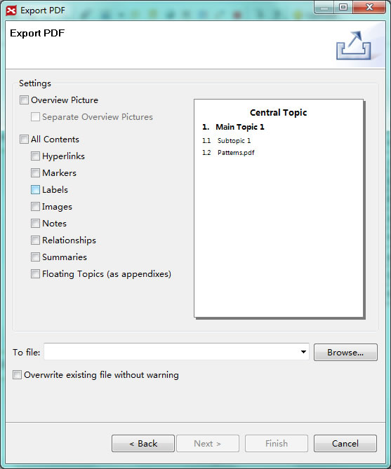

XMind Pro supports exporting to a variety of file formats. You can export maps to MindManager files, PDF, MS Word, Powerpoint, image file formats, and more. Here's how:

To Export to PDF(Map):
- Choose "File > Export" on the menu.
- Select "PDF(Map)" in the export dialog.
- Click "Next" to continue.
- Choose the location and name the file after clicking 'Browser'.
- Change the settings: Page Size, Orientation, and Resolution.
- Click 'Finish' to end this process.

To Export to PDF:
- Choose "File > Export" on the menu.
- Select "PDF Document" in the export dialog.
- Click "Next" to continue.
- Choose the location and name the file after clicking 'Browser'.
- Change the settings following and see the changes in the preview dialog: 'Overview', 'Separate Overview', 'Notes', 'Floating Topics', 'Labels', 'Markers', 'Image', 'Relationships', 'Hyperlinks'.
- Click 'Finish'to complete the export process.

To Export to Mindjet MindManager Map:
- Choose "File > Export" on the menu.
- Select "Mindjet MindManager Map" in the export dialog.
- Click "Next" to continue.
- Choose the location and name the file after clicking "Browser".
- Click "Finish" to end this process.

To Export to Image:
- Choose "File > Export" on the menu.
- Select "Image" in the export dialog.
- Click "Next" to continue.
- Choose the location and name the file after clicking "Browser".
- Select the Image Type: JPG, PNG, GIF or BMP.
- Click "Finish"to complete the export process.

To Export to RTF:
- Choose "File > Export" on the menu.
- Select "RTF File" in the export dialog.
- Click "Next" to continue.
- Choose the location and name the file after clicking "Browser".
- Click "Finish"to complete the export process.

To Microsoft Word:
- Choose "File > Export" on the menu.
- Select "Word 97-2003 document" or "Word 2007 document" in the export dialog.
- Click "Next" to continue.
- Choose the location and name the file after clicking "Browser".
- Change the settings if needed and see the changes in the preview dialog: "Overview", "Separate Overview", "Notes", "Floating Topics", "Labels", "Markers", "Image", "Relationships", "Hyperlinks".
- Click "Finish"to complete the export process.

To Microsoft PowerPoint:
- Choose "File > Export" on the menu.
- Select "PowerPoint 97-2003 Presentation" or "PowerPoint 2007 Presentation" in the export dialog.
- Click "Next" to continue.
- Choose the location and name the file after clicking "Browser".
- Change the settings if needed and see the changes in the preview dialog: "Overview", "Separate Overview", "Notes", "Floating Topics", "Labels", "Markers", "Image", "Relationships", "Hyperlinks".
- Type the "Footer text".
- Click "Finish"to complete the export process.

Note:
- The preview is an example for your reference. The appearance of your map may vary from the examples presented here.
- Exporting to Microsoft Word and PowerPoint is only supported for Windows Operating system at present. You must have Microsoft Word or PowerPoint installed to view the exported files.